VERO / REPRESENTED PLAYERS
OUR
PLAYERS.
Individual talent. Shared ambition. Explore our roster and open a player’s football CV.
31 players
Nika RadolovićGoalkeeperPogoń Szczecin · PolandView player CV Anna-Maria PanagiotopoulouGoalkeeperOlympiacos · GreeceView player CV
Anna-Maria PanagiotopoulouGoalkeeperOlympiacos · GreeceView player CV Griselda TselaCentral MidfielderPogoń Szczecin · PolandView player CVIoanna BataoulaCentral DefenderOFI Crete · GreeceView player CV
Griselda TselaCentral MidfielderPogoń Szczecin · PolandView player CVIoanna BataoulaCentral DefenderOFI Crete · GreeceView player CV Maria MatthaiouGoalkeeperAthlone Town AFC · IrelandView player CV
Maria MatthaiouGoalkeeperAthlone Town AFC · IrelandView player CV Katrin KirpuForwardLASK Frauen · AustriaView player CV
Katrin KirpuForwardLASK Frauen · AustriaView player CV Grigoria PouliouForwardPanathinaikos · GreeceView player CV
Grigoria PouliouForwardPanathinaikos · GreeceView player CV
Anna-Maria PanagiotopoulouGoalkeeperOlympiacos · GreeceView player CV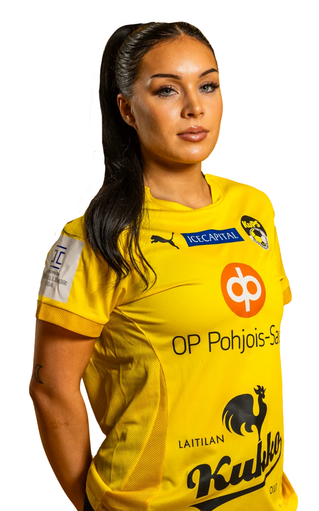
Selja LeiwoRight Back / Left Back / Central DefenderKuPS · FinlandView player CV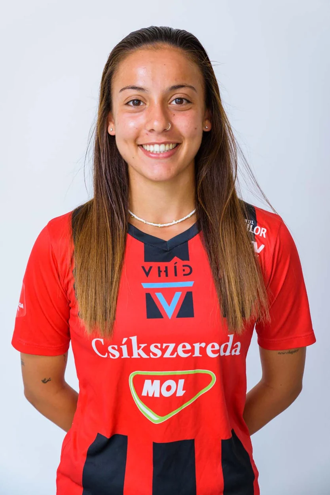
Antria EfstratiouCentral DefenderFK Csíkszereda · RomaniaView player CV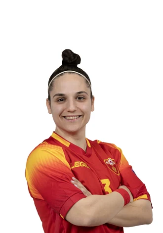
Aleksandra PopovićRight Back / Central DefenderŽNK Olimpija Ljubljana · SloveniaView player CVBojana PetkovaRight Back / Right WingerOFI Crete · GreeceView player CV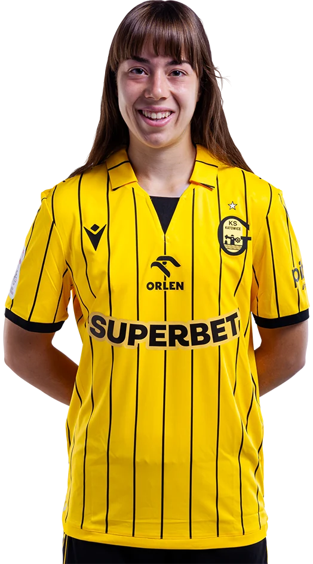
Marina TheodorakiCentral DefenderMedyk Konin · PolandView player CVGriselda TselaCentral MidfielderPogoń Szczecin · PolandView player CVIoanna BataoulaCentral DefenderOFI Crete · GreeceView player CV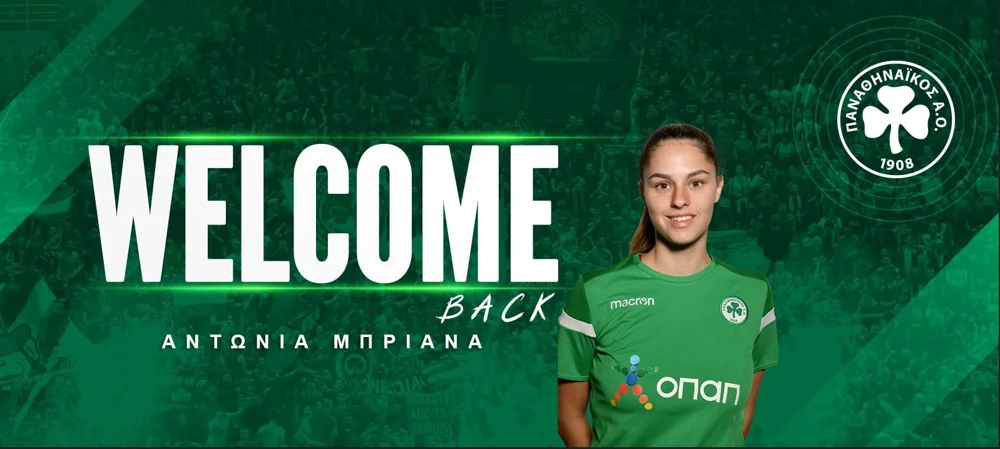
Antonia BrianaStriker / WingerOdysseas Moschato · GreeceView player CVKonstantina DrakogiannakiRight Back / Left BackOdysseas Moschato · GreeceView player CVGMGeorgia MichouCentral Midfielder / Attacking MidfielderOdysseas Moschato · GreeceView player CV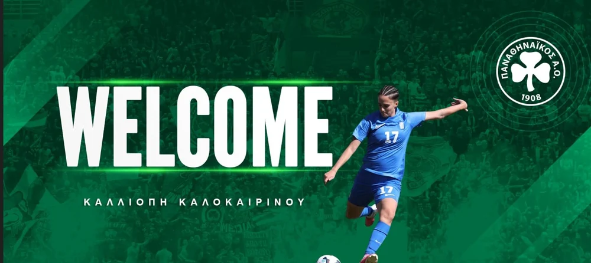
Kalliopi KalokairinouCentral DefenderPanathinaikos · GreeceView player CV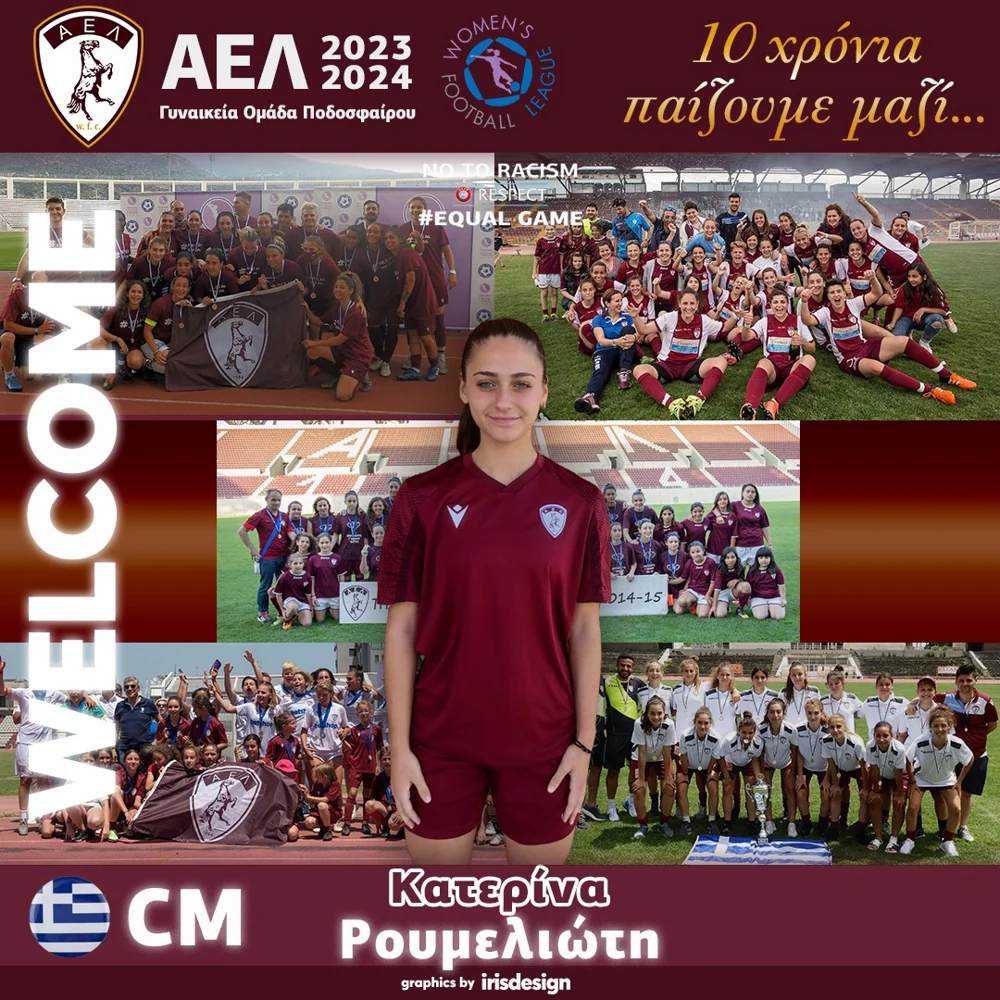
Katerina RoumeliotiRight Back / Left BackAgia Paraskevi · GreeceView player CV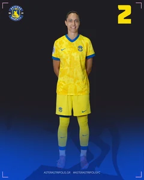
Joanna OlszewskaCentral DefenderAsteras Tripolis · GreeceView player CV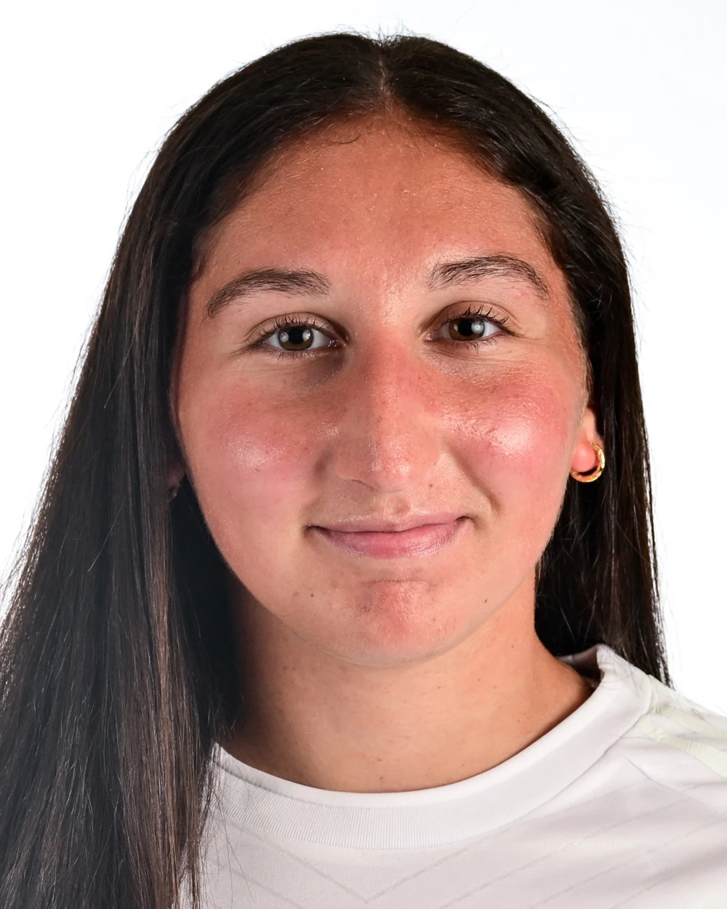
Katerina VassilounisCentral MidfielderAsteras Tripolis · GreeceView player CV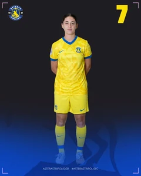
Konstantina PlataniaWingerAsteras Tripolis · GreeceView player CV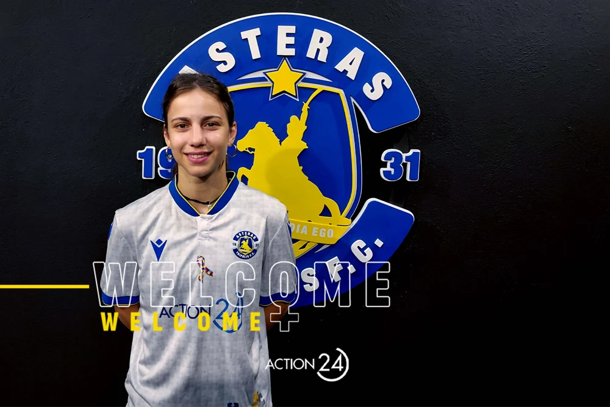
Nikoleta PitsiouWinger / Attacking MidfielderAsteras Tripolis · GreeceView player CVDRDespoina RokomaCentral MidfielderKifisia · GreeceView player CVSMSona MakulovaCentral MidfielderFree AgentView player CV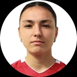
Maria MavridouWingerAE Mykonos · GreeceView player CVChantal Marie KirtzakisCentral DefenderFree AgentView player CV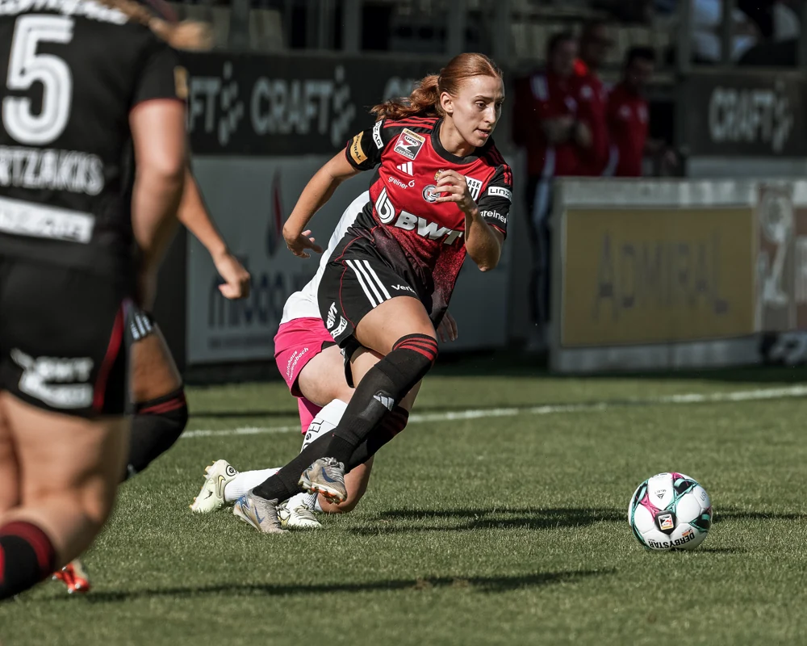
Aimilia Olga DaskalouWinger / Attacking MidfielderFree AgentView player CV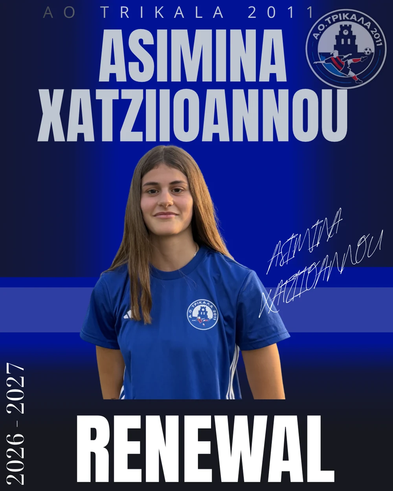
Asimina ChatziioannouRight BackTrikala 2011 · GreeceView player CVAVAnabella VassilounisCentral Midfielder / Attacking MidfielderFree AgentView player CV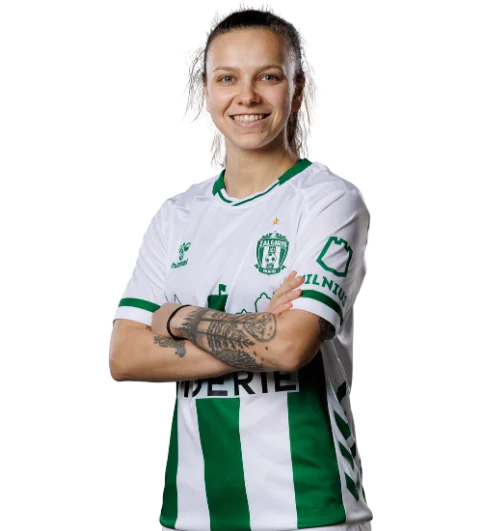
Irina TopalAttacking Midfielder / WingerFK Žalgiris · LithuaniaView player CV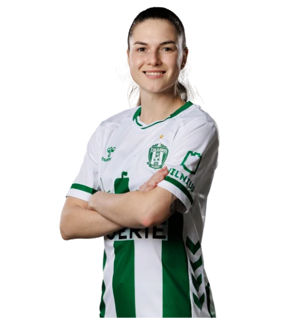
Valeriia PostolWinger / StrikerFK Žalgiris · LithuaniaView player CVLolita ŽižytėRight BackFK Žalgiris · LithuaniaView player CVMaria MatthaiouGoalkeeperAthlone Town AFC · IrelandView player CVKatrin KirpuForwardLASK Frauen · AustriaView player CVGrigoria PouliouForwardPanathinaikos · GreeceView player CVNo players match these filters. Try another name or reset the filters.
FOR PLAYERS
TELL US YOUR
STORY.
Share a little about your playing journey and what you want to explore next.
GET IN TOUCH